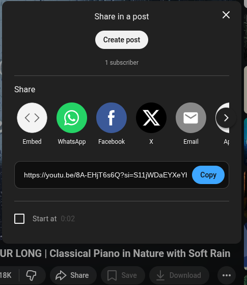
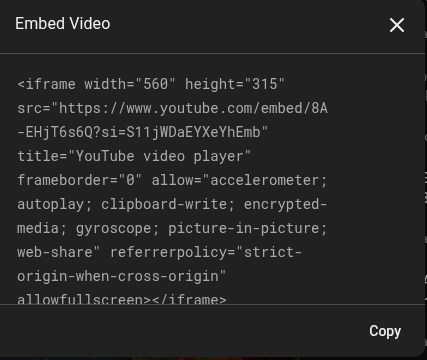

Once you've uploaded a video to a video-hosting website (such as YouTube or Vimeo), your video is compressed and ready to be embedded onto your website. If you're embedding someone else's video, be sure that the embeddnig option is enabled.
The iframe tag is used by video-hosting websites (YouTube, etc.) to create a "window" to the video's content. Alternatively, you may choose to use a popular video service to generate the code for you. You click the "Share" and "Embed" options and they generate the code for you, which you simply have to copy and paste.

